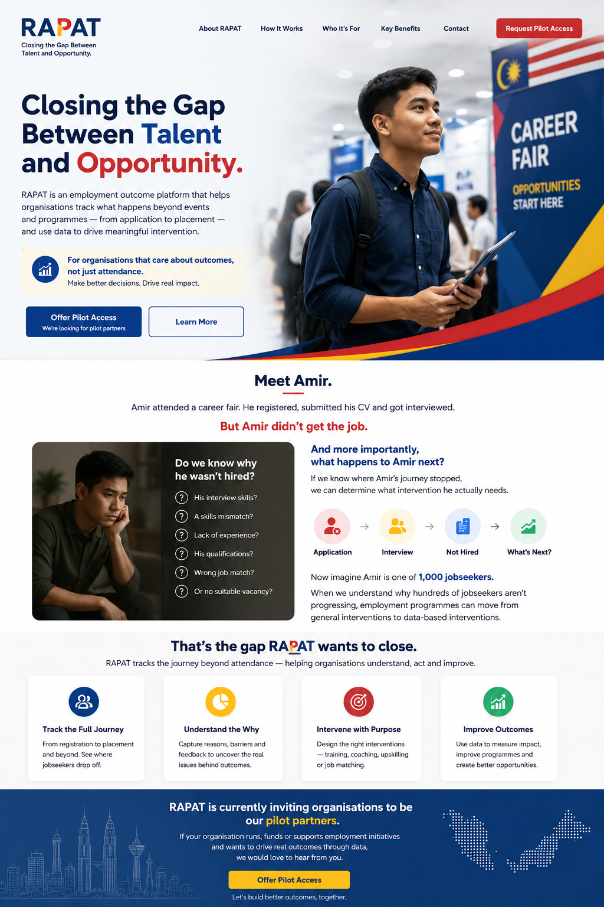

Closing the Gap
Between Talent
and Opportunity.
RAPAT is an employment outcome platform that helps organisations track what happens beyond events and programmes — from application to placement — and use data to drive meaningful intervention.

Meet Amir.
Amir attended a career fair.
He registered, submitted his CV and got interviewed.
Do we know why he wasn't hired?
And more importantly,
what happens to Amir next?
If we know where Amir's journey stopped, we can determine what intervention he actually needs.
When we understand why hundreds of jobseekers aren't progressing, employment programmes can move from general interventions to data-based interventions.
That's the gap RAPAT wants to close.
RAPAT tracks the journey beyond attendance — helping organisations understand, act and improve.
Track the Full Journey
From registration to placement and beyond. See where jobseekers progress, pause or drop off.
Understand the Why
Capture reasons, barriers and feedback to uncover the real issues behind employment outcomes.
Intervene with Purpose
Design the right interventions — training, coaching, upskilling, reskilling or better job matching.
Improve Outcomes
Use data to measure impact, improve programmes and create better pathways to opportunity.
Why It Matters
Illustrative example of an employment initiative funnelBuilt for organisations that need to see outcomes — and act on them.
RAPAT is designed for organisations that run, fund or support employment initiatives and want stronger visibility on what happens after participation.
Outcome Intelligence
Data-based interventionRAPAT is currently inviting organisations
to be our pilot partners.
If your organisation runs, funds or supports employment initiatives and wants to drive real outcomes through data, we would love to hear from you.
What a RAPAT pilot can test
Request Pilot Access
Tell us about your organisation and the employment initiative you want to improve.